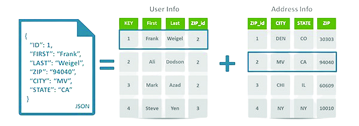
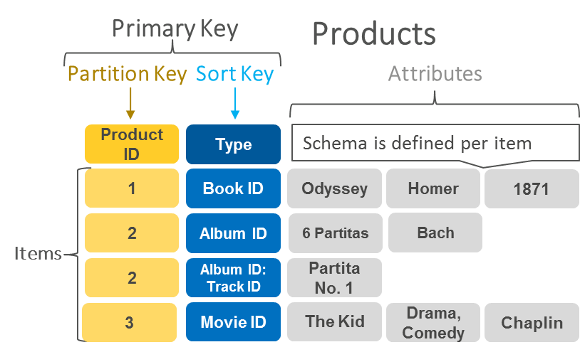
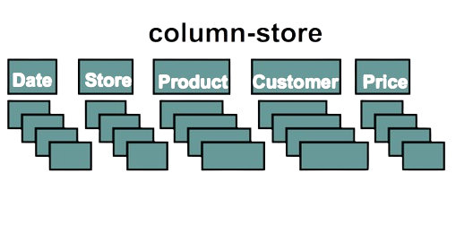
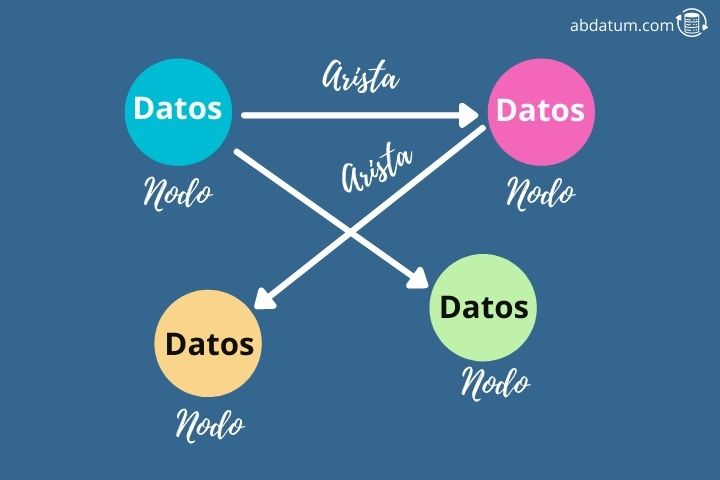

Tipos de NoSQL
1. Documentales
Las bases de datos documentales son ideales para datos semi-estructurados y desestructurados. Utilizan documentos, como JSON o BSON, para almacenar datos. Esto permite una estructura flexible y dinámica, adaptándose fácilmente a los cambios en los datos sin necesidad de redefinir el esquema.
Los documentos pueden contener una amplia variedad de datos, incluyendo listas, mapas y otros documentos anidados, lo que las hace ideales para aplicaciones web, gestión de contenido y almacenamiento de datos de usuario. Ejemplos populares incluyen MongoDB y CouchDB.
Ventajas: Flexibilidad en el esquema, fácil de escalar horizontalmente, y adecuado para datos semi-estructurados.
Desventajas: No es ideal para consultas complejas y transacciones múltiples.
2. Clave-Valor
Las bases de datos clave-valor son óptimas para operaciones de lectura/escritura rápidas y simples. Almacenan datos como pares clave-valor, donde cada clave única se asocia a un valor. Este modelo es extremadamente simple y permite un acceso muy rápido a los datos.
Son eficientes para cachés y sesiones, y se utilizan a menudo en aplicaciones que requieren rendimiento de alta velocidad, como almacenamiento en caché de resultados de consultas, gestión de sesiones y almacenamiento de perfiles de usuario. Ejemplos son Redis y DynamoDB.
Ventajas: Alta velocidad y simplicidad en el modelo de datos.
Desventajas: No es adecuado para datos complejos y relaciones entre datos.
3. Columnares
Las bases de datos columnares son adecuadas para grandes conjuntos de datos y análisis. Almacenan datos en columnas en lugar de filas, lo que optimiza las consultas analíticas que requieren el procesamiento de grandes volúmenes de datos en paralelo.
Este modelo permite una compresión de datos más eficiente y una rápida recuperación de columnas individuales de datos, lo que es ideal para sistemas de business intelligence y big data. Ejemplos son Cassandra y HBase.
Ventajas: Alta eficiencia en consultas analíticas y compresión de datos.
Desventajas: Menos adecuado para transacciones frecuentes y datos altamente relacionados.
4. De Grafos
Las bases de datos de grafos son perfectas para datos con relaciones complejas. Modelan datos usando nodos, aristas y propiedades, permitiendo consultas eficientes de relaciones y patrones complejos.
Son ideales para aplicaciones como redes sociales, sistemas de recomendación y análisis de fraudes, donde las relaciones y las interacciones entre los datos son fundamentales. Ejemplos son Neo4j y ArangoDB.
Ventajas: Eficiencia en consultas de relaciones complejas y modelado intuitivo de datos.
Desventajas: Menos eficiente para operaciones masivas de lectura/escritura.